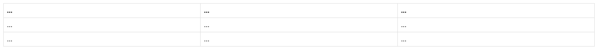
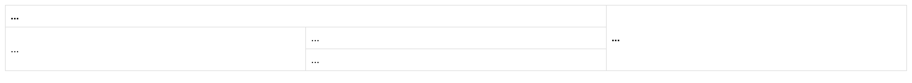
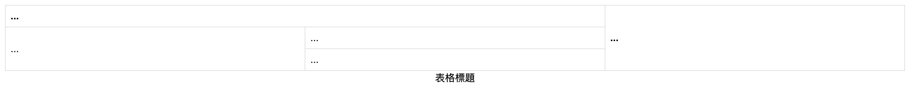
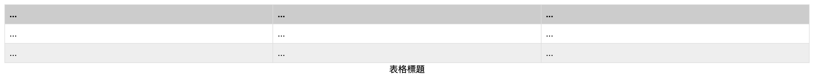

第9-10週：表格與表單
Table 表格設計
<table> 元素
基本元素
<tr>- table row（表格列）<td>- table cell（表格儲存格）<th>- 表格標題（預設粗體）<tr>包住<td>、<th>
最基本的表格
<table>
<tr>
<th>....</th><!-- 表格標題，預設粗體 -->
<th>....</th>
<th>....</th>
</tr>
<tr>
<td>....</td>
<td>....</td>
<td>....</td>
</tr>
<tr>
<td>....</td>
<td>....</td>
<td>....</td>
</tr>
</table>
表格樣式
table {
width: 100%;
border-collapse: collapse;
/* 邊框重疊 | 邊框分離 separate */
}
th, td {
border: 1px solid #ddd;
padding: 8px;
text-align: left;
}

跨列與跨行
colspan- 跨列rowspan- 跨行
<table>
<tr>
<th colspan="2">...</th>
<th rowspan="3">...</th>
</tr>
<tr>
<td rowspan="2">...</td>
<td>...</td>
</tr>
<tr>
<td>...</td>
</tr>
</table>

表格標題 caption
<caption> 表格說明，通常在表格元素內第一行
位置可以透過 CSS 中 caption-side 調整
<table>
<caption>表格標題</caption>
...
</table>
caption-side
caption {
caption-side: bottom;
}
通常表格說明會在表格下方

thead, tbody, tfoot
thead- 表格標題tbody- 表格內容tfoot- 表格尾
加上這些元素可以以 CSS 做比較多樣式
<table>
<caption>表格標題</caption>
<thead>
<tr>
<th>...</th>
<th>...</th>
<th>...</th>
</tr>
</thead>
<tbody>
<tr>
<td>...</td>
<td>...</td>
<td>...</td>
</tr>
</tbody>
<tfoot>
<tr>
<td>...</td>
<td>...</td>
<td>...</td>
</tr>
</tfoot>
</table>
加上樣式
thead { background: #ccc; }
tfoot { background: #eee; }

其他表格元素
col/colgroup- 定義欄的屬性scope="row"/scope="col"- 屬性，用於表頭關聯
期中考預習
複習重點：
- HTML 基本標籤結構
- 區塊與行內元素
- CSS 選擇器與屬性
- Box Model
- Media Query 響應式設計